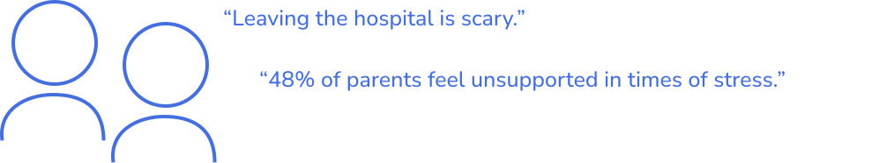
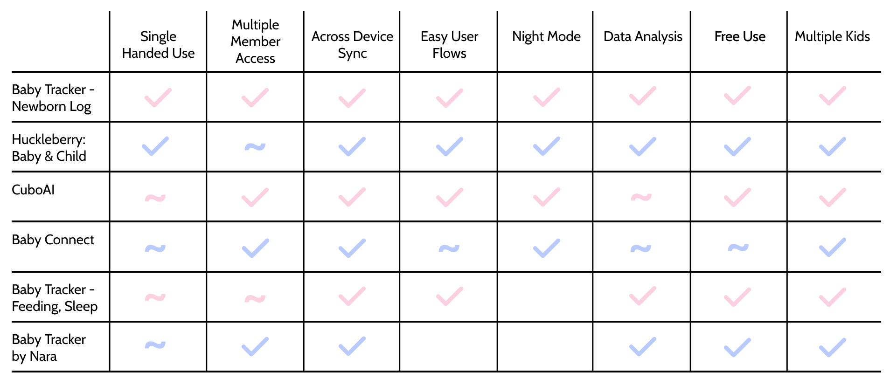
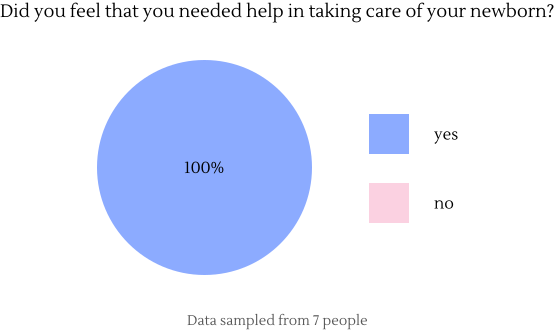
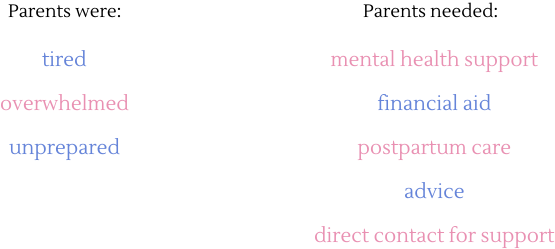

Parents and caregivers are essential. They are saddled with many responsibilities and
it is important that we come up with ways to support them. Even our own team member had a child
at the beginning of our project. After learning of his struggles and many responsibilities,
we wanted to make an app that would be able to help him and others like him out.
To figure out their needs and pain points, we did some initial research to figure out
what the current state of the world is for people who care for newborns. Our key insights
were that:

A lack of support is exacerbated especially when leaving the hospital. Parents go from
having the support of nurses, to being on their own. This can be very daunting, especially
for first-time parents.
With information on the current state of the world and to guide our further steps, our team
created an initial problem statement:
Parents with newborns need to know what their baby’s needs are and why, so they can focus
on taking care of and enjoying their new family member.
Now, with an area of focus, I led our team in conducting a competitive analysis. After scouring
the app store for different baby tracking applications, we came up with a list of six apps
currently on the market.

I found that Baby Tracker - Newborn log had all the features we wanted to implement and
thought were important in our initial research. We had found our main competitor to test our
app against.
However, just implementing those features would not set us apart in the baby health tracking
market. To find out what would distinguish us from our competitors, we set out to gather
information from our population of interest: parents and caregivers.
With my team, I created a Google Form to send out to different caregivers in our community.
With only a few responses in, I started to notice a trend among our participants:


With this information, I posed to my team that we should include parent resources in our app.
This would give parents a single app where they can track baby health, while also monitoring
their own needs. Thus, saving them the extra work of looking for resources themselves.
As a team, we looked back at our list of competitors and noticed that none of them provided
parent resources. We had found our secret sauce.
This also allowed us to update our problem statement:
Caregivers need a centralized and consolidated resource to help them
maintain their baby’s health and their own wellbeing.